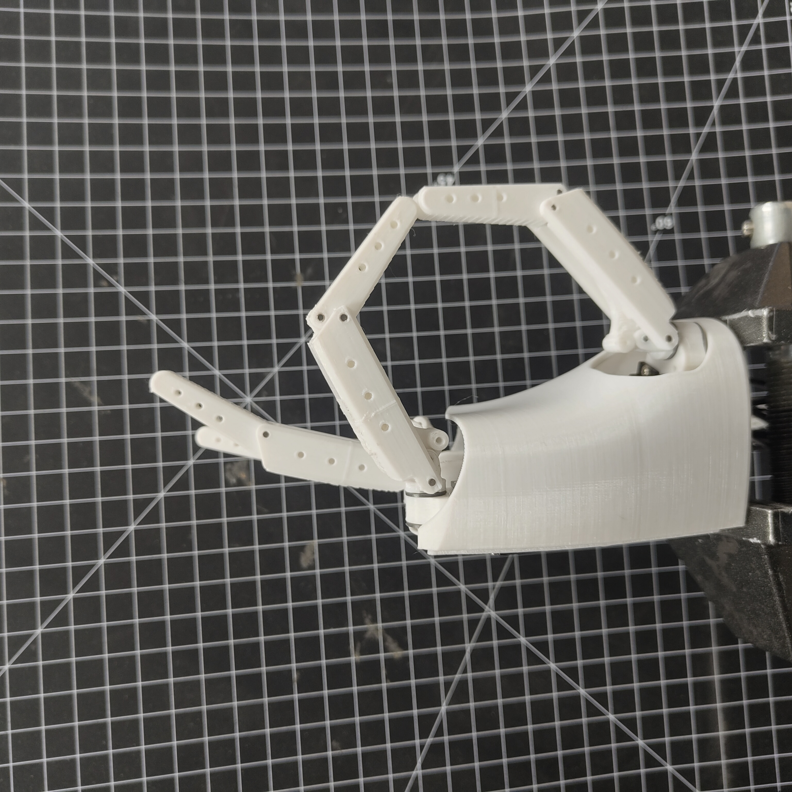
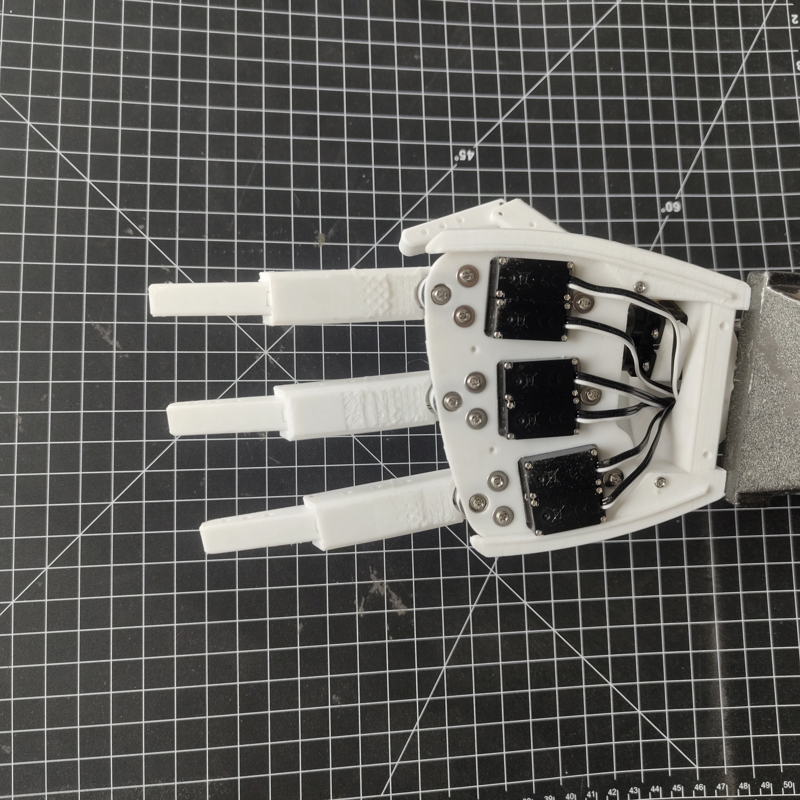
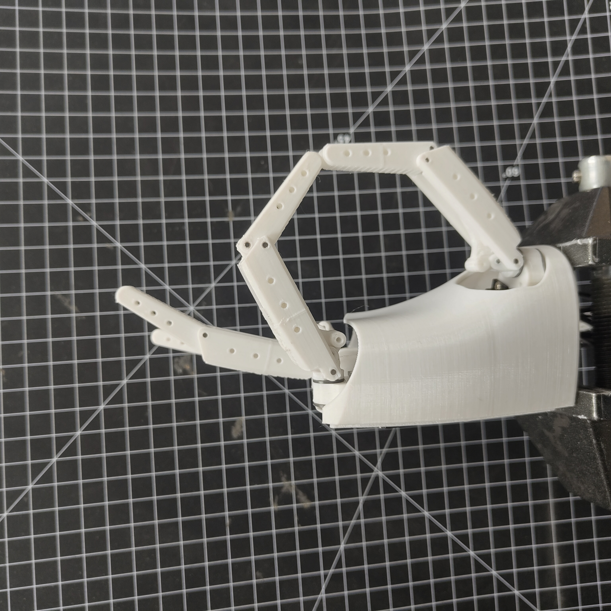
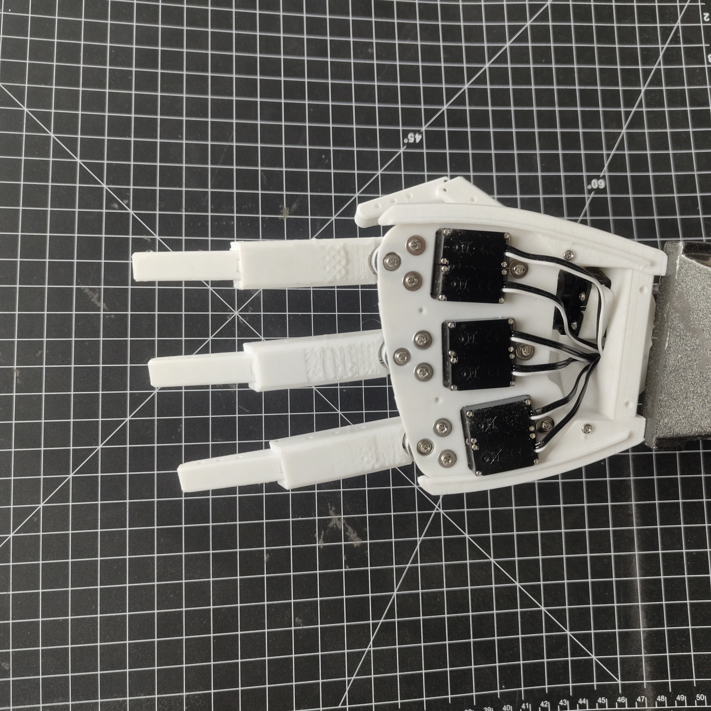
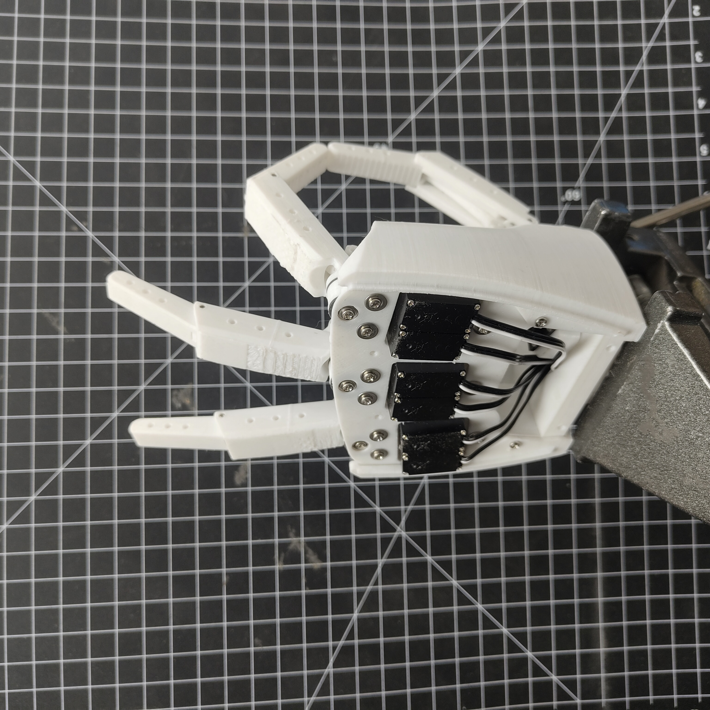
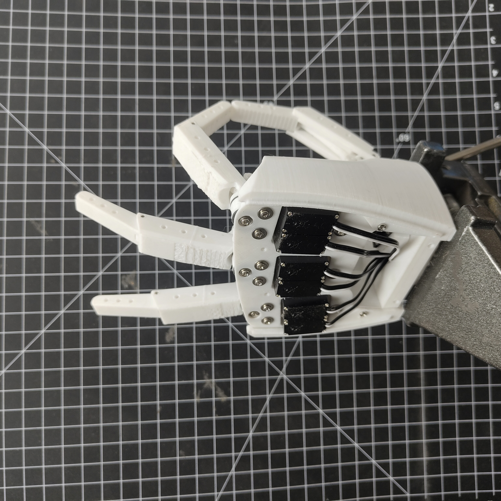
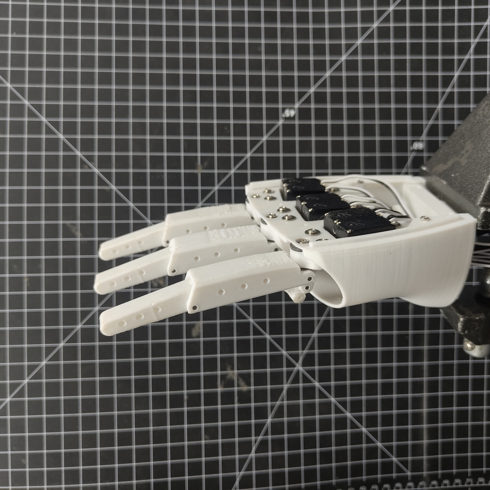
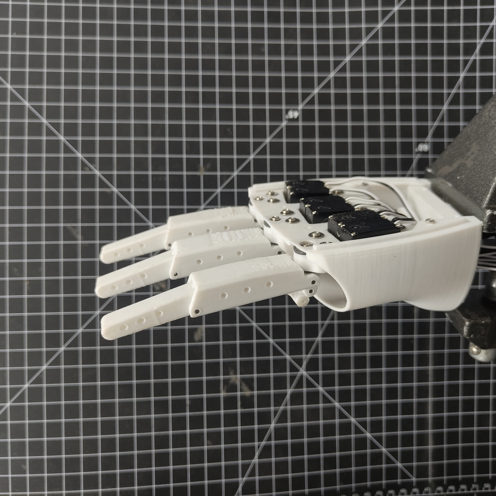

Docs Repository
Full technical documentation, diagrams, and build notes hosted on GitHub.
GitHub repoOpen build log for the prosthetic hand project
This site is a living record of the design, electronics, and assembly journey. Every stage is documented so contributors can jump in fast, understand the design logic, and push the project forward.
Mission
The goal is a rugged, affordable prosthetic hand that can be built and improved by a community of makers, engineers, and clinicians. This site is the shared workspace: design intent, experiments, failures, and lessons are all captured.
Clear notes, annotated diagrams, and step-by-step logs for every build stage.
Defined tasks, contribution tracks, and quick onboarding for new builders.
Focus on usability, durability, and feedback loops from real users.
Documentation
Full technical documentation, diagrams, and build notes hosted on GitHub.
GitHub repoSource for the project website, updates, and deployment details.
GitHub repoMechanical layout, actuator choices, sensor logic, and control strategy.
Read firstParts list, fabrication tools, wiring kits, and sourcing tips.
ProcurementExploded steps, cable routing, and torque tuning for each finger.
Stage 3 focusStage Log
Each stage captures intent, materials, and visual evidence to help new contributors align fast.
Defining the project scope, user goals, and constraints. This stage sets expectations for ergonomics, cost, and maintainability.
Refining the form and mechanical layout. This includes actuator positioning, tendon paths, and finger ergonomics.

Current CAD model snapshots capturing the full assembly, finger mechanism, and reach posture before fabrication.


Current build phase: assembling the hand, wiring the control system, and testing for stability. This is where contributors can help the most.
 



 

 



Contribution
Head to the Project Status Board to see what needs help right now. Pick a task that fits your skills and contribute where you can make the most impact.
Contributors can jump in across mechanics, electronics, software, and documentation. Every contribution is logged and credited so the community can build faster.